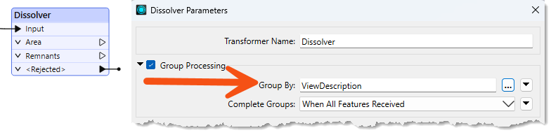
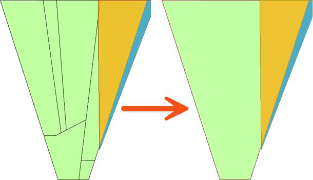
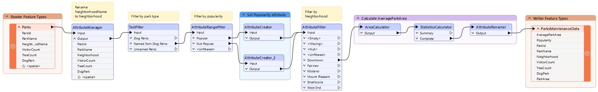
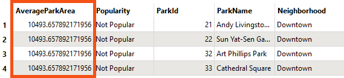
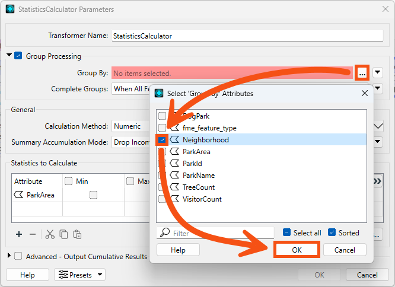
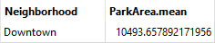
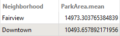

Learning Objectives
After completing this lesson, you’ll be able to:
- Explain how the Group By parameter lets you process records in groups.
- Explain the difference between the Process at End and Process When Group Changes Group By modes.
- Use the Group By parameter in an FME transformer.
Instructions
In this lesson, you will:
- Scroll down to read the text below.
- Optional: You can view the video instead of reading the text. The video covers the text material.
- Complete the Quiz toward the bottom of the page.
- Optional: Let us know if you found this lesson relevant to your role by filling out the survey at the bottom of the page.
- Click 'Next' to mark the lesson complete.
Resources
- Starting workspace
- C:\FMEData\Workspaces\TransformAttributes\process-data-in-groups.fmw
- Complete workspace
- C:\FMEData\Workspaces\TransformAttributes\process-data-in-groups-complete.fmw
- Parks.zip (MapInfo TAB)
- C:\FMEData\Data\Parks\Parks.tab
What is Group By?
Group By parameters allow records to be processed in groups by a single FME transformer.
FME transformers perform transformations on either one record at a time or a whole set of records at once.
- For example, the AreaCalculator transformer operates on one record at a time (to measure the area of a single polygon record). We call it a feature-based transformer.
- The StatisticsCalculator operates on multiple records simultaneously (to calculate an average value for them all). In FME, we call this set of records a group and the transformer a group-based transformer.
Creating Groups
A group is a defined set of records processed by a transformer. By default, group-based transformers treat all the records they receive as a single group.
However, such transformers also have a Group By parameter. This parameter lets the user define several groups based on an attribute's value.

To illustrate groups, let's consider calculating the mean age of FME users. The default group for the calculation includes all FME users.
But you could instead divide everyone by their nationality and calculate the average age per country.
This is the same as having a nationality attribute in a dataset and selecting that in an FME Group By parameter.
Here, a Dissolver transformer is used to dissolve (merge) several polygon records. The selected Group By attribute is ViewDescription. Additionally, you can set Complete Groups to When All Features Received, which makes the Dissolver a blocking transformer, or to When Group Changes (Advanced). The latter option should only be used when your data is sorted by the value(s) of the grouping attribute(s). It can offer a performance boost if your data is already sorted or if you are processing many records.

FME creates a series of groups for overlaying, where the records in each group share the same value for the ViewDescription attribute. The practical outcome is that polygon dissolving takes place only where line records share the same description:

Group By Mode
When grouping records, the transformer can handle the group in two different ways. The first way is to hold all of the records until all of the records have come through the transformer; this is referred to as blocking. This is set using the Process at End (Blocking) Group By Mode.
The other way is to pre-sort your data into groups using a transformer like the Sorter. Then, once your data is grouped, use the Process When Group Changes (Advanced) Group By Mode. This mode will push the records through the transformer after each group, which will help speed up performance. Only use this option when your data is pre-sorted.
Scenario
Sven continues to work with the city park data. He's been asked to add the average size of parks in each neighborhood. To do this, he can use the Group By parameter with an existing workspace.
1) Open Starting Workspace
- Start FME Workbench (2026.1 or later).
- Open the starting workspace (C:\FMEData\Workspaces\TransformAttributes\process-data-in-groups.fmw).
- This workspace calculates the average area of parks in the Downtown neighborhood using the StatisticsCalculator.

2) View AverageParkArea Values
- Run the workspace.
- Inspect the AttributeRenamer's Output port.
- Note that AverageParkArea is 10,494 m² for the Downtown neighborhood.
- Remember that you can view the units for area or length calculations by checking the coordinate system of your data using the Record Information Window. See Connect to Data for more details.

3) Set Group By in the StatisticsCalculator
Now we'd like to change the workspace to calculate the park area by neighborhood.
- View the parameters for the StatisticsCalculator transformer.
- Check Group Processing.
- Click the '...' button beside the Group By parameter.
- Select the attribute called Neighborhood.

He clicks OK.
4) Run the Workspace
- Run to the StatisticsCalculator
- Inspect the Summary output port in Data Preview
- This port shows a summarized table of the statistics we are calculating.
- This table displays the value of ParkArea.mean for each neighborhood.
- Because there is only one neighborhood included in the dataset after the AttributeFilter, there is currently only one record in the Summary table:

5) Add Another Neighborhood
We decide to include the Fairview neighborhood in the written data as well.
- Connect the Fairview output port on the AttributeFilter to the AreaCalculator.
- Run to the StatisticsCalculator again.
- Inspect the Summary port.
- Note that Table View now shows the average park area for both neighborhoods.

Leave Us Feedback on This Lesson